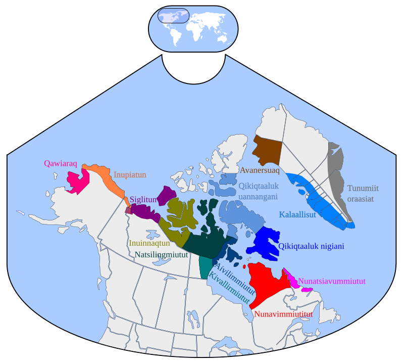
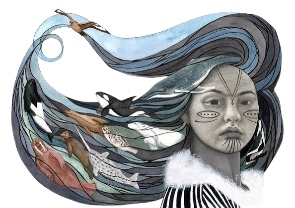

Inuit mythology comprises a rich tapestry of stories and legends originating from the Inuit peoples of the Arctic regions, including northern Canada, Alaska, Greenland, and parts of Siberia. It is important to note that this mythology encompasses only the aforementioned countries; there are other polar mythologies, such as Sámi shamanism and Antarctic traditions, but Inuit mythology was practiced exclusively in the Arctic.
The narratives are not governed by traditional creator gods but focus on the spirits inhabiting the environment. Shamans (angakkuit) acted as mediators, traveling in a trance to appease these forces and ensure success in the hunt.
Creation of the Universe
Inuit cosmology is deeply animistic and lacks a supreme creator God; however, one version of the creation legend holds that at the beginning of all things, the Earth was immersed in total darkness and covered only by water. A raven was flying over these waters; it beat its wings with great force and commanded the land to emerge.
The Earth emerged from the depths, and the Raven (Tulugaq) descended and began to peck at the ground, driving his beak into the rocks to shape the mountains, valleys, and rivers. From scraps of earth or branches, the Raven fashioned the animals and creatures that would inhabit the frozen region; later, he stole the Sun, the Moon, and the stars from selfish spirits who had hidden them in their homes. As he fled with these celestial bodies and cast them into the sky, he illuminated the world, creating the cycle of day and night and bringing warmth to the people.
Gods

Sedna: goddess of the sea and the underworld
Malina: Sun goddess
Igaluk: Moon god
Nanuk: powerful master spirit of the polar bears
Ijiraat: magical shapeshifting creatures that inhabit the tundras.
Kailik: weather goddess
Amaguq: shapeshifting deity in the form of a wolf
How this reaches us
In the early 20th century, explorers such as Knud Rasmussen extensively documented Inuit folklore and oral legends. Their accounts were translated into various languages, introducing Arctic mythology to Western academic and literary circles. In Japan, Inuit mythology is a strong source of inspiration for anime, manga, and video games. Renowned works have drawn upon the creatures, shamans, and transformative spirits of the polar region to craft their mystical narratives.
Examples of famous works that use this mythology as a reference are Avatar Legends, Game of Thrones, Pokémon, Brother Bear, One Piece, etc.